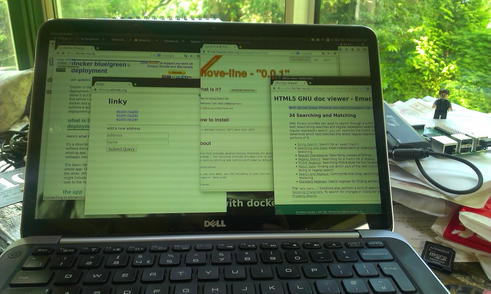
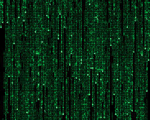
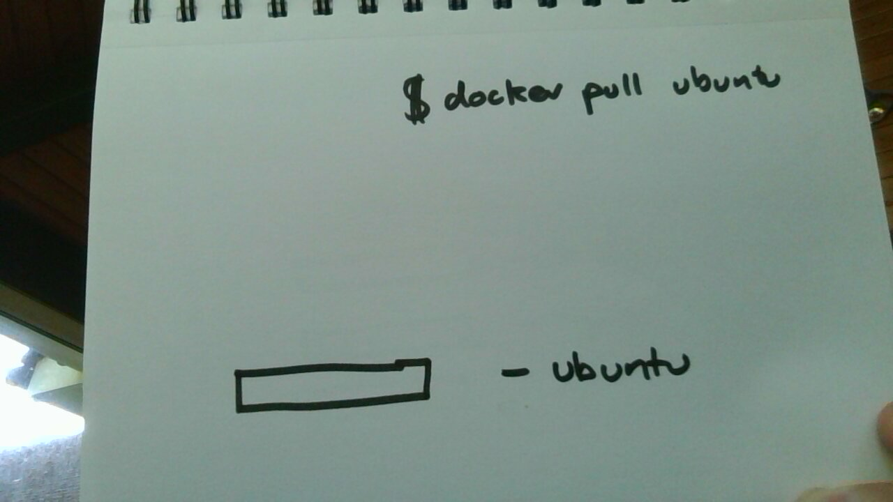
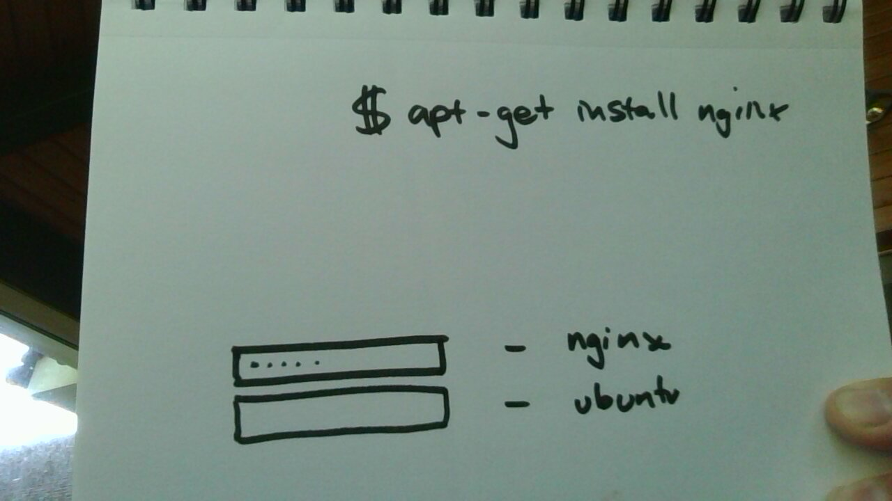
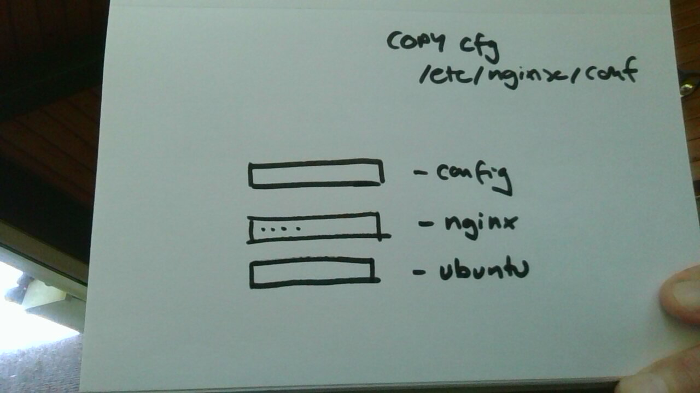
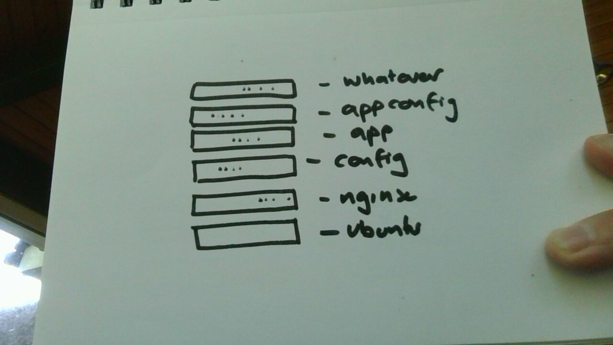
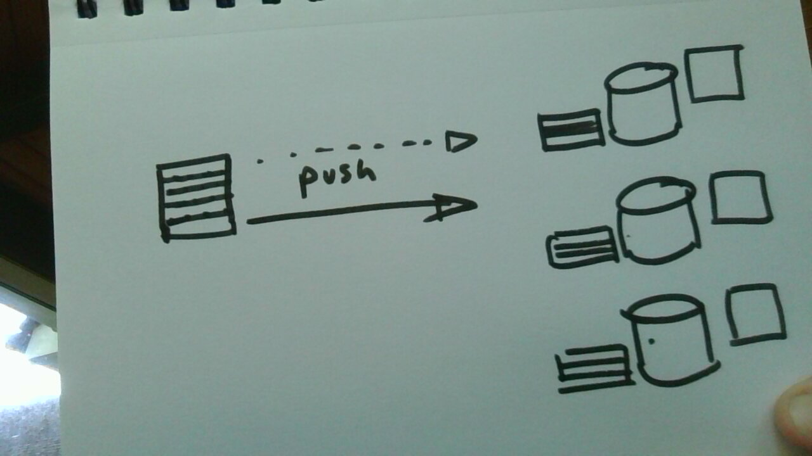
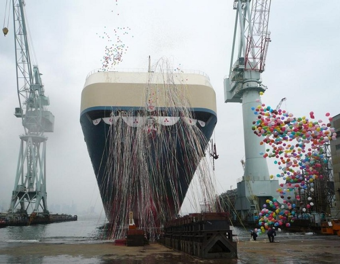
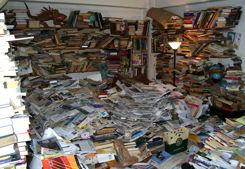
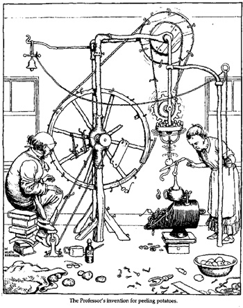

what I did (with docker) in my holidays
Table of Contents
- I make lots of stuff, often small stuff
- the problem
- docker is a packaging system
- it is just a packaging system
- how it works - containers
- aufs - layers of file systems
- a first example of a Dockerfile
- start with a layer -
- then it's layers …
- … upon layers …
- … on more layers …
- deploying
- lol. not really
- it's easier than in C++
- orchestration - you need one of these
- and it turns out like this
- more complicated docker example
- the make for that
- it's ok to make a mess
- push or pull
- push?
- push?
- pull?
- tooling
- free lunch!
- microservices
- personal computing
- fin
I make lots of stuff, often small stuff 
nics blog
marmalade-repo
pgdevbox
gnudoc
linky
the problem
deploying brand new things is hard
maintaining the deployments is harder
docker is a packaging system
it is just a packaging system
how it works - containers
everything's namespaces
why don't we make sockets like this?
$ echo query=rob+pike > /network/http/www.google.com
1987
$ chroot --userspec=nobadguyz /opt/bind9jail /usr/local/bin/named
docker
$ docker run -i -t ubuntu:14.04 /bin/bash
aufs - layers of file systems
a first example of a Dockerfile 
FROM nicferrier/elnode-and-nodejs MAINTAINER nic@ferrier.me.uk USER emacs WORKDIR /home/emacs RUN git clone https://github.com/nicferrier/gnudoc-js.git WORKDIR /home/emacs/gnudoc-js RUN npm install . CMD /usr/local/emacs/bin/emacs -daemon -l gnudoc.el ; tail -f /dev/null
start with a layer - 
then it's layers … 
… upon layers … 
… on more layers … 
deploying

lol. not really 
mylaptop$ docker push mything . . . myremotehost$ docker pull mything . . . myremotehost$ docker run -d mything 22406d84f32017453392d6295f66c94efea41dd37c25d744943a22b2ed1c6193
it's easier than in C++

link by tcp port - meh
link by volume - unix sockets work
FROM nicferrier/emacs MAINTAINER nic@ferrier.me.uk VOLUME /home/emacs/.emacs.d PORT 8006
orchestration - you need one of these
and it turns out like this

more complicated docker example
# A Docker file to marmalade in a docker FROM nicferrier/elnode MAINTAINER nic@ferrier.me.uk USER root ADD Dockerfile-marmalade-deploy.el /tmp/Dockerfile-marmalade-deploy.el ADD builds/ /home/emacs/builds ADD boot.el /home/emacs/boot.el RUN chown -R emacs /home/emacs/builds RUN chown emacs /tmp/Dockerfile-marmalade-deploy.el RUN chown emacs /home/emacs/boot.el USER emacs WORKDIR /home/emacs ENV HOME /home/emacs RUN mkdir /home/emacs/marmalade VOLUME /home/emacs/marmalade/ RUN /usr/local/emacs/bin/emacs -daemon -l /tmp/Dockerfile-marmalade-deploy.el EXPOSE 8005 CMD /usr/local/emacs/bin/emacs -daemon -l /home/emacs/boot.el ; tail -f /dev/null
the make for that
marmalade: build
$(docker) push nicferrier/elmarmalade
build: test
$(emacs) -batch --eval '(progn(package-initialize)(elpakit-make-multi "." "builds"))'
$(docker) build --no-cache -t nicferrier/elmarmalade .
test:
[ -x $(emacs) ] # missing emacs?
$(docker) help 2> /dev/null # missing docker?
# End
it's ok to make a mess 
push or pull
push? 
push aufs images to a docker registry
push?
you deploy to a known host
pull?
make some hosts
have them pull
tooling 
shell scripts
docker inspect container | jq